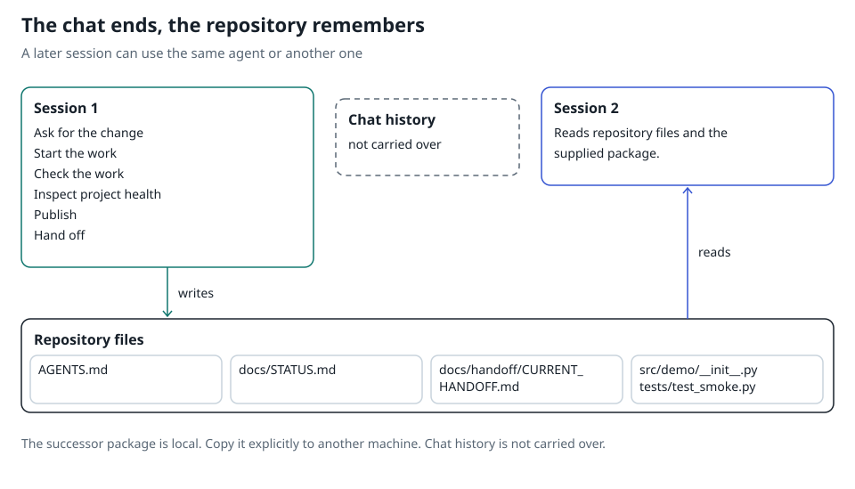

A practical first cycle
Use with Codex or Claude
You choose the goal and approve the result. Your coding agent edits and tests the project. The Kit creates durable project state and reports violations of defined rules.
Push the first commit with git push -u origin main before work start.
Which path fits your tool?
Agent Direct means the tool can work in the repository. Browser chats without repository access use the starter prompt and the Copy and Paste or File Transfer workflow. Tool behavior depends on the product version and settings; check the dated sources.
| Tool | Kit path | Project instructions | Source and review date |
|---|---|---|---|
| Codex CLI | Agent Direct | Reads repository AGENTS.md automatically. | Source: developers.openai.com · 2026-11-19 |
| Claude Code | Agent Direct | Reads AGENTS.md by default when no CLAUDE.md or CLAUDE.local.md is above the working directory, on supported versions; otherwise import @AGENTS.md from CLAUDE.md. | Source: code.claude.com · 2026-11-18 |
| GitHub Copilot cloud agent | Agent Direct | Supports repository instructions and AGENTS.md; check the specific editor or agent surface. | Source: docs.github.com · 2026-11-18 |
| Browser chat | Copy and Paste or File Transfer | Paste the starter prompt and provide the relevant repository files when the chat has no repository access. | Source: workflows page · 2026-11-18 |
Your first prompt
Paste this into a new session when you want a reliable starting instruction. It is rendered from the generated project's docs/handoff/STANDARD_AGENT_PROMPT.md template. A coding agent may also load AGENTS.md automatically, but that file's read list must be followed to find the Kit commands.
You are working in this repository.
Start by reading:
1. AGENTS.md
2. .agentic/project.yaml
3. docs/PROJECT_START.md
4. docs/STATUS.md
5. docs/TEST_GATES.md
6. docs/handoff/CURRENT_HANDOFF.md
Do not infer current state from memory.
Run or request:
git status --short
pytest -q
agentic-kit check
agentic-kit doctor
For substantial work, close with:
- Intended outcome:
- Required evidence:
- Outcome achieved:
- Changed files:
- Tests run:
- Remaining risks:One work cycle: add TSV, keep CSV
The repository test runs these Kit commands in a newly generated Python project. It uses a local remote and simulates GitHub, including a passing CI result and the merge. The example illustrates a CSV and TSV change. The test publishes a change to export-format.txt.

| Step | What you do | What the agent does | What the Kit checks |
|---|---|---|---|
| Set up once | |||
Create the projectagentic-kit init demo --type python-cli --no-github --description 'CSV and TSV exporter' | Choose the project type. | Runs the command on your request. | Creates the project contract, status, test-gate and handoff files. |
Acknowledge the rulesagentic-kit rules acknowledge | Set up the remote, push main with an upstream, and read the project rules. | Records the rule acknowledgement. | Binds the acknowledgement to the current rule sources. |
| Session 1 | |||
| Ask for the change No Kit command | State the requirement: add TSV output and keep CSV output unchanged. | Inspects the repository before proposing the change. | Nothing runs at this step; the Kit does not write or judge code. |
Start the workagentic-kit work start --branch feat/tsv | Approve starting the change. | Prepares the branch, adds TSV output and writes a regression test for CSV. | Checks the repository state and prepares the work branch. |
Check the workagentic-kit check | Review the diff and the test result. | Runs the project tests, then the Kit check. | Reports configured rule violations. A CSV break is caught by the regression test, not by the Kit. |
Inspect project healthagentic-kit doctor | Decide whether the change and its evidence are sufficient. | Runs the health check and reports the result. | Reports project health within its named checks. |
Publishagentic-kit work finish --branch feat/tsv --title 'Add TSV output' --message 'Add TSV output' --path export-format.txt --dry-run | Review the proposed publication steps and approve them before execution. | Previews the closeout for explicitly selected changed files. | Plans a commit, pull request, CI check and merge. Execution requires explicit approval. |
Hand offagentic-kit transfer chat-switch-complete | Request a handoff before changing sessions. | Prepares the successor package after the approved closeout. | Writes and validates the successor package; a failed validation blocks. |
| Session 2 | |||
| Start the next session No Kit command | Give the new session access to the validated package. Copy it explicitly if you switch machines. | Reads repository files and the supplied package. | Builds the package locally from repository context. |
What these checks do not decide
The Kit does not choose TSV as a requirement, write the feature, or replace your review. A green check or doctor result covers its named rules. A CSV regression is caught only when a test asserts the old behavior and that test runs.